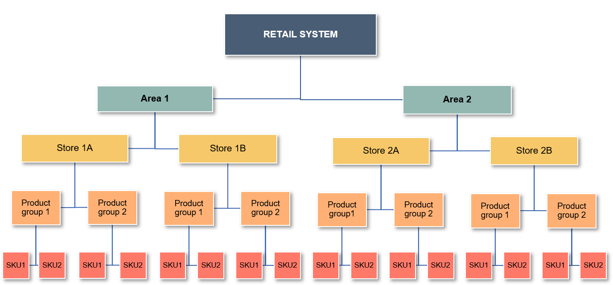

7. Strategies¶
Multi-Step Forecasting Strategies¶
Multi-step forecasting predicts a sequence of future values (e.g., next 7/30 days of sales).
There are three core strategies: Direct, Recursive, and Hybrid.
1️⃣ Direct Multi-step Forecasting¶
Definition:
A separate model is trained for each forecast horizon (T+1, T+2, ..., T+H).
Advantages
- 🟢 No error accumulation: Each step’s forecast is independent.
- 🛠️ Step-specific tuning: Optimize features/model for each horizon.
- 🎯 Superior for long horizons: Accuracy stays high even many steps ahead.
Disadvantages
- 🔴 Complexity: Needs H models (one per horizon).
- 💸 Resource intensive: More compute, more maintenance.
- ⚠️ Framework limitations: Not all ML libraries support multi-output.
When to use:
- You need top accuracy for each future step (e.g., daily business KPIs).
- Have enough data and compute for multi-model training.
2️⃣ Recursive (Iterated) Multi-step Forecasting¶
Definition:
Train a single model for one-step-ahead. Predict recursively: use each output as next input.
Advantages
- 🟢 Simplicity: Only one model to train, deploy, maintain.
- 🪶 Lightweight: Low resource requirements.
- ⚡ Fast updates: Good for rapid retraining.
Disadvantages
- 🔴 Error accumulation: Mistakes at each step snowball for long horizons.
- 📉 Weaker for long-range forecasts: Accuracy drops the further you predict.
When to use:
- Resource-constrained environments.
- Short-term forecasts or when model must update often.
3️⃣ Hybrid Multi-step Forecasting¶
Definition:
Combine direct and recursive: e.g., direct for first few steps, recursive after, or ensemble both.
Advantages
- 🔄 Balanced: Mixes accuracy with efficiency.
- 🧩 Flexible: Can adapt to data/business need.
Disadvantages
- 🧑🔬 Complex implementation: Logic and tuning more involved.
- 👷 May need custom code or frameworks.
When to use:
- When horizon is long and you want both accuracy and efficiency.
- Advanced pipelines or high-stakes business planning.
📊 Strategy Comparison¶
| Strategy | Model Count | Error Propagation | Customization | Complexity | Use Case |
|---|---|---|---|---|---|
| 🟦 Direct | High | None | Per-step | High | Max accuracy, long horizon |
| 🟩 Recursive | Low | High | Shared | Low | Simplicity, fast iteration |
| 🟧 Hybrid | Medium | Medium | Mixed | Medium/High | Best-of-both, advanced setups |
Tip:
Modern ML pipelines often allow you to choose or ensemble these strategies, so you get the best trade-off for your business case!
Hierarchical Reconciliation Methods¶

Hierarchical Forecast Reconciliation¶
Hierarchy: Retail System → Area → Store → Product Group → SKU
What is Forecast Reconciliation?
In hierarchical time series forecasting, reconciliation means adjusting forecasts so that results at every level are consistent: the forecast for a higher level always equals the sum of forecasts at the levels below.
This guarantees that all reports and business decisions are based on numbers that "add up"—from total system, to region, to store, to SKU.
Why is Reconciliation Needed?¶
- Prevents inconsistencies between total and detailed (store/SKU) forecasts.
- Ensures all stakeholders (from HQ to stores) can trust and align on the same numbers.
- Avoids planning and reporting confusion caused by non-coherent forecasts.
Core Reconciliation Methods¶
| Method | How It Works | Advantages | Limitations |
|---|---|---|---|
| Bottom-up | Forecast at the lowest level (SKU), then aggregate up through the hierarchy | Captures detailed local variation | Sensitive to local noise and outliers |
| Top-down | Forecast at the highest level, then allocate down using ratios or rules | Stable and efficient for total control | Can miss store/SKU-level patterns and events |
| Middle-out | Forecast at a mid-level (e.g., Store), aggregate up and/or disaggregate down | Balances granularity and aggregate accuracy | Relies on mid-level data quality |
| OLS | Uses regression to minimize squared differences between levels | Guarantees sum coherence; interpretable | Assumes error variance is constant or linear |
| MinTrace | Uses error covariance to minimize total reconciliation variance | Statistically optimal (lowest total variance) | Computationally more demanding |
Why Use a Hybrid Approach?¶
Why Hybrid?
- No single method is best for every dataset or business use case.
- By combining strategies, the system achieves:
- Consistency from total to lowest level
- Balance between detail and overall stability
- Adaptability to the business structure and priorities
The pipeline can dynamically select and tune the reconciliation method each run—often using:
- Middle-out as the main approach,
- Enhanced by Top-down, Bottom-up, and final adjustment using OLS and MinTrace when needed.
When to Use Each Method¶
| Strategy | How It Works | Best Used When |
|---|---|---|
| Bottom-up | Aggregate lowest-level forecasts upward | Data is detailed and high quality at the bottom |
| Top-down | Split high-level forecasts downward | Macro-level targets, weaker data at detail level |
| Middle-out | Start at mid-level, adjust up and down | Middle tiers are decision-driving |
| OLS / MinTrace Adjustment | Regression or covariance-based adjustment | Deep hierarchies or strict audit requirements |
| Hybrid (combined) | Mix of all above, tuned per run | Need both granularity and top-level accuracy |
Business Impact
Accurate, coherent forecasts empower inventory planning, sales targets, and resource allocation. Managers at every level—from HQ to store—see numbers that “add up”, driving trust in the system.
Considerations
- Bottom-up can amplify local noise.
- Top-down may overlook store or SKU-level changes.
- OLS/MinTrace adjustments require reliable error estimates for optimal results.
Summary Table¶
| Method | Granularity | Coherence | Stability | Complexity | Best For |
|---|---|---|---|---|---|
| Bottom-up | High | Yes | Medium | Low | SKU-level or store-level control |
| Top-down | Low | Yes | High | Low | Corporate, strategic planning |
| Middle-out | Medium | Yes | Balanced | Medium | Multi-tier organizations |
| OLS/MinTrace | All | Yes | Highest | High | Deep hierarchies, compliance |
A hybrid reconciliation approach ensures forecasts are accurate, robust, and actionable for every level of your business.
For more details on implementation, see System Architecture and Appendix.